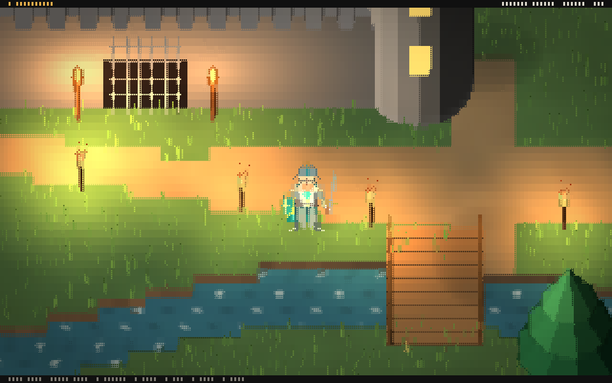

Rendering
What happens between a scene and the Braille characters on screen, and which knobs to turn when an image looks too busy or too flat.

A frame, step by step
- Projection. The camera looks down at a pitch, by default about 52 degrees. Ground depth shrinks with the sine of the pitch and height rises with its cosine, which gives the three quarter look.
- Geometry. Nodes draw into a buffer of dots, 2x4 per terminal cell. Each dot keeps its color, surface normal, depth, world position and the entity that drew it. Sprites are vertical planes, so a knight in front of a wall covers it and one behind it is hidden, dot by dot.
- Lighting. Shadows are laid on the ground, then every dot is lit by the sun, the sky and point lights such as lanterns and dragon fire.
- Post. Water glints, distance fog, a light outline on depth edges, and a final color grade with exposure, contrast, saturation, warmth and vignette.
- Braille. Each cell has eight dot colors but a terminal can show only two. The encoder splits the eight into two groups and writes the matching Braille glyph with one foreground and one background color.
- Cells. Text and glyph art are written on top as whole characters, so labels stay sharp.
The passes
| Pass | Stage | Settings |
|---|---|---|
clear | geometry | |
scene | geometry | |
shadows | lighting | strength |
lighting | lighting | |
water | post | strength, speed |
fog | post | density, start, end, height |
outline | post | threshold, strength |
grade | post | exposure, contrast, saturation, warmth, vignette |
braille | resolve | calm |
cells | overlay |
Open the Pipeline tab to switch passes off, reorder them within a stage and read how long each takes. The braille pass is what turns dots into characters, so turning it off leaves the view empty apart from text; switch off fog, outline or grade instead to compare a frame with and without them.
Keeping it easy on the eyes
Braille images get tiring when many cells turn tiny color differences into random dot patterns. Three things keep a scene calm:
- Smooth sources. Terrain blends its colors across tile corners, so the encoder sees gradients instead of hard tile steps that would turn into a checkered dot pattern.
- The calm setting of the
braillepass. Cells whose two colors are closer than this are drawn as one flat color, so only real edges become dots. Too high and the image turns into flat blocks; the default keeps edges and drops noise. - Low contrast detail. Grass, grain and other small texture should stay close to the color under it. Bright, saturated speckles read as noise.
- Slow motion for thin things. A one dot wide blade that moves quickly flickers. The sample grass sways slowly and with small amplitude.
Time of day
With auto on, the environment derives the sun direction and color, the ambient light, the sky and the fog from hour. Night keeps a dim, cool moon so scenes stay readable, and point lights carry the mood.